Marrakech's street food scene is legendary — from the nightly carnival of smoke and spice at Jemaa el-Fnaa to hidden medina stalls where locals eat for a few dirhams. Slow-roasted mechoui, spicy snail soup, flaky msemen with honey, and tangia cooked in hammam ashes — this city treats food as performance art.
We analyzed hundreds of Reddit posts from r/Morocco, r/travel, r/solotravel, and r/food to find the street food experiences that actual Moroccan locals and repeat visitors recommend. Skip the aggressive touts — these are the bites worth your dirhams.
📊 How we built this list
We analyzed 120+ Reddit posts and 800+ comments across r/Morocco, r/travel, r/solotravel, r/food, and r/finedining — spanning 2020 to 2026. Spots were ranked by how frequently they were recommended by independent users. We weighted Moroccan locals' picks and repeat visitors more heavily than first-time tourist posts.
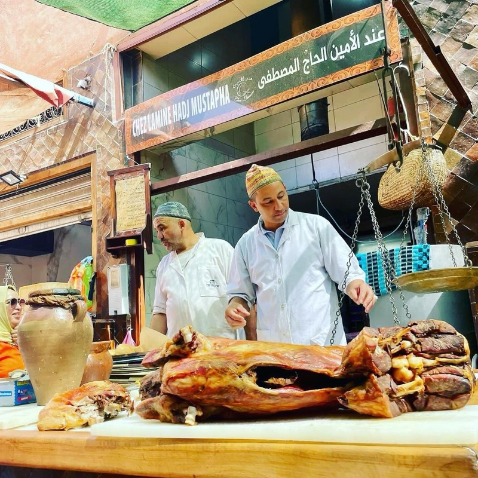
What to order: The tangia — lamb slow-cooked for hours in a clay urn buried in hammam ashes. Also get the mechoui (whole roasted lamb) carved to order. Ask for preserved lemons on the side.
"In Mechoui Alley there is a store run by a man who was the King's chef. You can try the royal mechoui and tanjia there. The place is called Chez Lamine Hadj Mustapha."
— r/Morocco · Marrakech food help thread, 2023
"If I could pick just one restaurant in Marrakech to return to and recommend to foodie friends, it would be Chez Lamine."
— r/travel · Marrakech food discussion
tabiji verdict: The undisputed king of Mechoui Alley. The tangia is Marrakech's signature dish — meat so tender it falls apart at the touch of a fork, cooked underground in hammam coals. Gordon Ramsay visited. You should too.
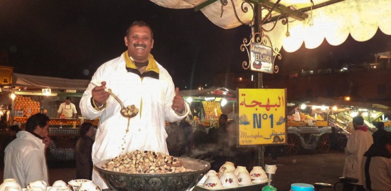
What to order: A bowl of snail soup (babbouche) — the snails are simmered in a fragrant herbal broth with anise, thyme, licorice root, and over a dozen spices. Drink the broth — it's the best part.
"If you see the snails for sale on the street try them! Street food: Snails with the soup — it's full of herbal flavors and might be overwhelming after finishing."
— r/Morocco · Visitor tips thread, 2024
tabiji verdict: The ultimate Marrakech street food initiation. Forget what you think about snails — these are nothing like French escargot. The herbal broth is complex and warming, and at 5–10 MAD a bowl, it's the cheapest meal in the square. Look for the stalls where locals are slurping.
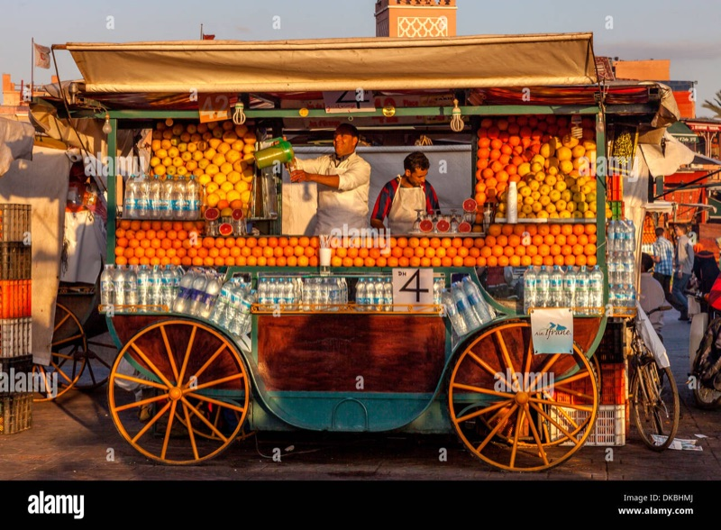
What to order: Freshly squeezed orange juice (the classic), or try a panaché (mixed fruit juice) or avocado-date smoothie. The deeper stalls away from the main row are usually cheaper and better.
"I recommend a panaché or datte. I prefer these places over the juice carts you find in Jemaa el-Fnaa which tend to be thin, over sugared, and over priced."
— r/finedining · Best restaurants Marrakech, 2025
tabiji verdict: The iconic Marrakech experience — rows of identical juice stalls competing for your attention. The front-row stalls are more touristy (10–15 MAD). Walk a bit deeper for 5 MAD glasses that are just as good. Pro tip: the smoothie shops in the medina alleys are better value and less hectic.
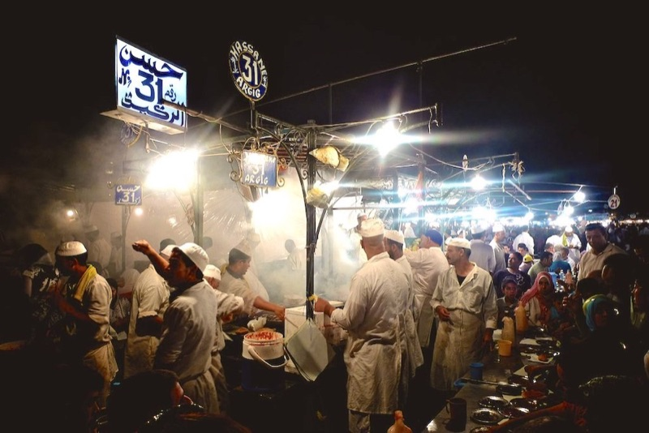
What to order: Mixed brochettes (lamb, chicken, kofta) with bread, olives, and harissa. Sit at stalls where locals are eating — the food is the same across most stalls, but turnover matters for freshness.
"Look for the stalls where you mainly have locals sitting to eat. Visit the Jemaa el-Fnaa main square market at night. Drink lots of Moroccan mint green tea, eat some merguez sausages, try some snails and eat some fried fish."
— r/travel · Travelling to Marrakesh, 2024
tabiji verdict: The nightly food circus is Marrakech's main event. Yes, the touts are aggressive — but the food at the right stalls is genuinely good and cheap. Follow the locals, not the guys grabbing your arm. A full plate of grilled meats with bread and salads runs 30–50 MAD.
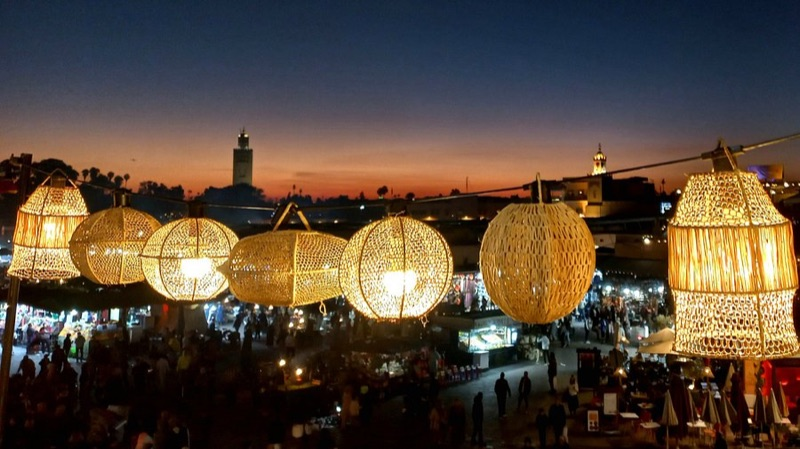
What to order: Chicken tagine with preserved lemons and olives — the classic Moroccan comfort dish. Start with a bowl of harira soup. Grab a terrace seat for views over the square.
"Once you've eaten, people in the queue will start to agitate. Chez Chegrouni is not a place to linger — but the food is excellent for the price and location."
— r/travel · Marrakech food recommendations
tabiji verdict: The most famous budget restaurant on the square. Yes, it's in every guidebook — but it delivers solid, no-nonsense Moroccan food at honest prices. The rooftop terrace overlooking Jemaa el-Fnaa at sunset is worth the queue.
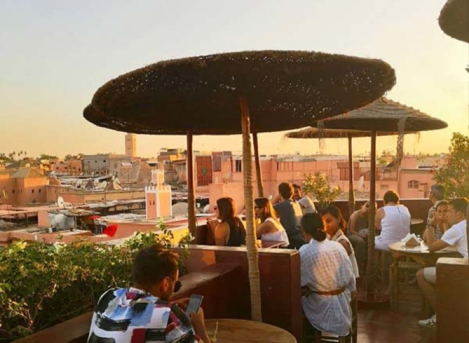
What to order: The spiced lentil soup, kofta tagine, or their excellent Moroccan salad platters. Pair with fresh mint tea on the rooftop terrace overlooking Rahba Kedima.
"Foodie heaven — street food (harira, snails/babbouche, tanjia, briouats, msemen, maakouda, fresh juices) + mid-range spots (Café des Épices, Nomad, Le Jardin)."
— r/Morocco · 4-day Marrakech itinerary, 2025
tabiji verdict: Not street food in the traditional sense, but an essential medina pitstop. The rooftop overlooks the chaotic spice square — perfect for recovering from sensory overload. Solid Moroccan food at fair prices. Come for lunch.
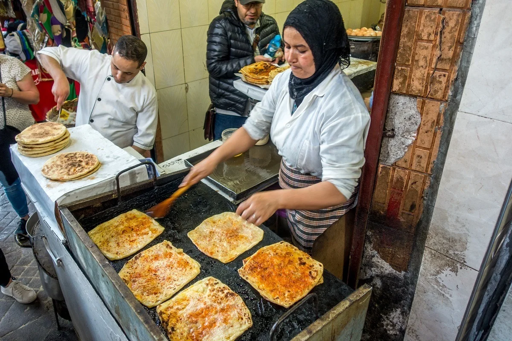
What to order: Msemen (square-shaped flaky flatbread) with honey and butter, or stuffed with cheese and khlii (preserved meat). Also try harsha (semolina bread) with amlou — a dip made from argan oil, almonds, and honey.
"Don't forget to try m'loui/msemen with some mint tea, the best freaking pancakes in the world 🎉"
— r/solotravel · Morocco solo travel, 2022
"Breakfast: Msemen or Harsha with Amlou (a mix of argan oil and almonds). Sample msemen, square-shaped pancakes perfect for dipping in honey."
— r/Morocco · Visitor recommendations, 2024
tabiji verdict: The ultimate Moroccan breakfast street food. You'll see women making these fresh on griddles at every corner of the medina. Crispy, flaky, buttery, and absurdly cheap. With a glass of mint tea, it's the perfect start to a medina day. Ask for amlou if they have it.
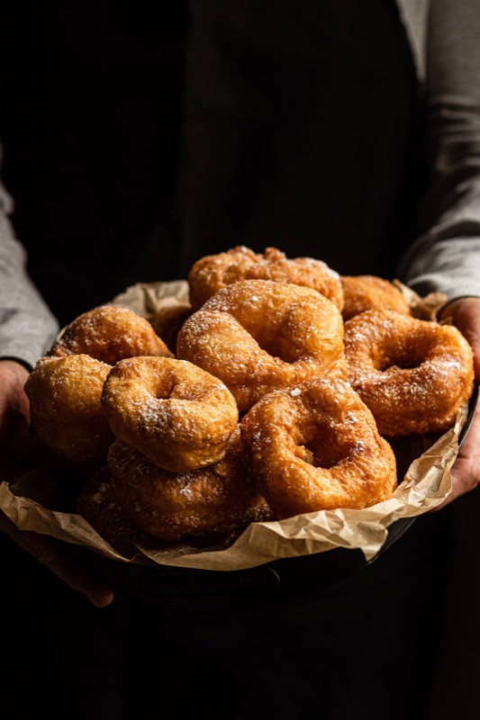
What to order: Sfenj — Moroccan doughnuts fried to order in hot oil. They're unsweetened (or lightly sugared) with a crispy outside and airy inside. Best eaten immediately while piping hot.
tabiji verdict: At 1–2 MAD each (about $0.10), sfenj might be the world's cheapest breakfast. These Moroccan doughnuts are nothing like Western doughnuts — they're lighter, less sweet, and best eaten hot from the oil. Follow the smell of frying dough in the morning.
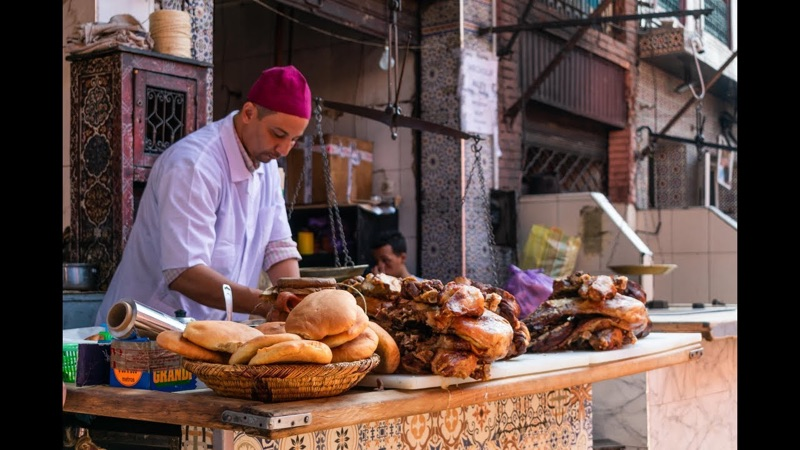
What to order: Half-kilo of mechoui (slow-roasted whole lamb) — the meat is carved off the hanging carcass and served with cumin salt and fresh bread. Eat with your hands for the full experience.
"We had amazing Tanjia with preserved lemons in Mechoui Alley just by the square. Keep Cafe de France behind you till you reach the alley on your right."
— r/travel · Jemaa el-Fnaa food stalls thread
tabiji verdict: A narrow alley of butchers slow-roasting whole lambs since time immemorial. The meat melts in your mouth, seasoned with nothing but cumin and salt. Come at lunch when the lamb is freshest. Prices have crept up, but it's still extraordinary value for the quality.
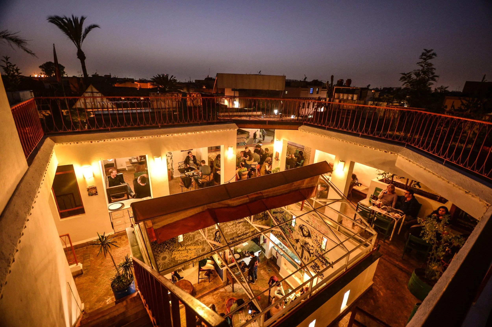
What to order: The famous camel burger (yes, really), msemen with amlou and mint tea, or their traditional Moroccan cooking class. The rooftop terrace is a peaceful retreat from the medina chaos.
"Café Clock — great for traditional meets modern Moroccan vibes. Order msemen with amlou and mint tea for a perfect combo."
— r/Morocco · Marrakech food recommendations
tabiji verdict: A cultural institution as much as a restaurant. The camel burger is their headline act, but the traditional items — msemen with amlou, Moroccan salads — are the real stars. Also hosts storytelling nights and live music. Worth the walk into the Kasbah.
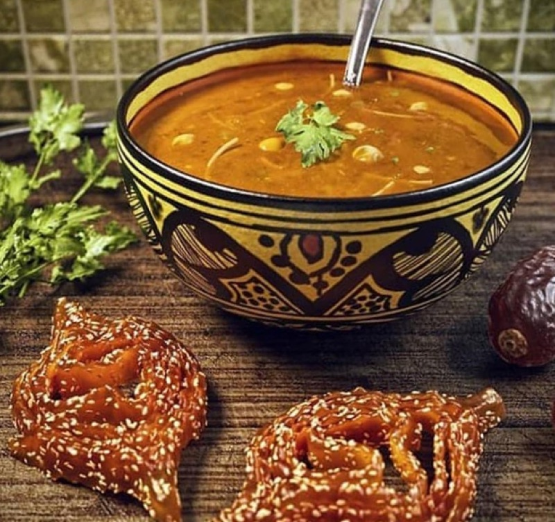
What to order: A bowl of harira — Morocco's national soup. Tomato-based with lentils, chickpeas, vermicelli, herbs, and often a squeeze of lemon. Paired with dates and chebakia during Ramadan, but available year-round.
tabiji verdict: The soul of Moroccan street food. Harira is hearty, warming, and deeply nourishing — the kind of soup that fixes everything. At 5–10 MAD from a street cart, it's the cheapest full meal in the city. Especially good in the cooler evening air.
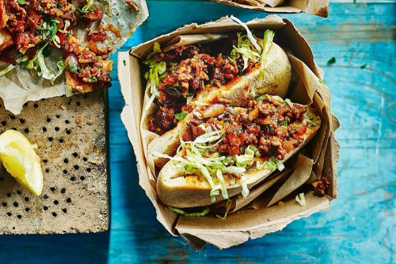
What to order: Mixed meat sandwich (bocadillo) — chopped lamb, liver, and kofta griddled with vegetables on a flat top, stuffed into fresh khobz bread. Ask for an egg on top and some cheese.
"Mixed meat sandwiches are also one of my go-to's. You will see places with a flat top griddle that they cook different meats with some veggies (ask for an egg on top!) and some cheese then put into a piece of bread."
— r/finedining · Best restaurants Marrakech, 2025
tabiji verdict: The Moroccan answer to a Philly cheesesteak. These griddle sandwich stalls are everywhere in the medina — just follow the sizzle. At 15–25 MAD for a massive sandwich, it's the best calorie-per-dirham ratio in Marrakech. Perfect late-night fuel after a long souk session.
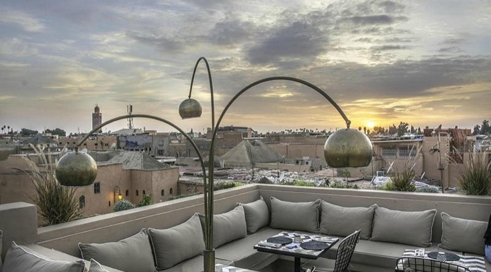
What to order: Lamb tangia, spiced cauliflower, or their modern take on pastilla. The rooftop terrace has stunning views over the medina rooftops toward the Atlas Mountains.
tabiji verdict: The priciest pick on this list, but Nomad earns its spot with elevated takes on Moroccan street food classics. The rooftop views are spectacular. Book ahead or arrive at opening — it fills up fast. Splurge-worthy after days of 10-dirham meals.
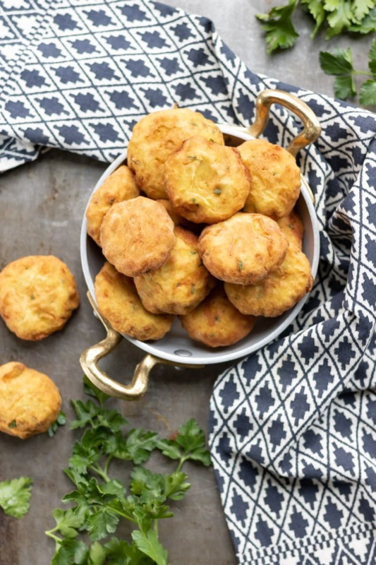
What to order: Maakouda — crispy deep-fried potato patties seasoned with cumin and coriander. Often stuffed into a sandwich with harissa and salad. Simple, cheap, devastatingly good.
tabiji verdict: Think Moroccan hash browns, but better. Crispy on the outside, fluffy inside, seasoned with cumin — and at 3–5 MAD each, you can eat five without guilt. The perfect midday snack between souk shopping.
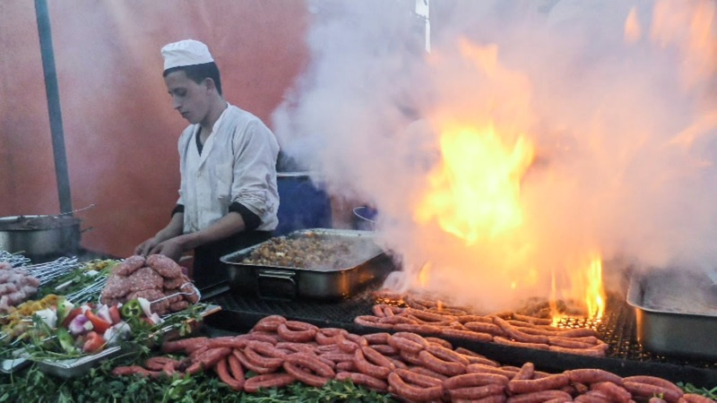
What to order: Grilled merguez (spicy lamb sausages) served in bread with harissa, cumin, and fresh tomato-onion salad. Get them straight off the grill when the casing is snapping-crispy.
"Visit the Jemaa el-Fnaa main square market at night. Drink lots of Moroccan mint green tea, eat some merguez sausages, try some snails and eat some fried fish."
— r/travel · Travelling to Marrakesh, 2024
tabiji verdict: Merguez is the North African sausage you've probably had at a BBQ — but nothing compares to eating them fresh off a charcoal grill in Jemaa el-Fnaa. Spicy, smoky, and impossible to eat just one. Pair with fresh bread and harissa.
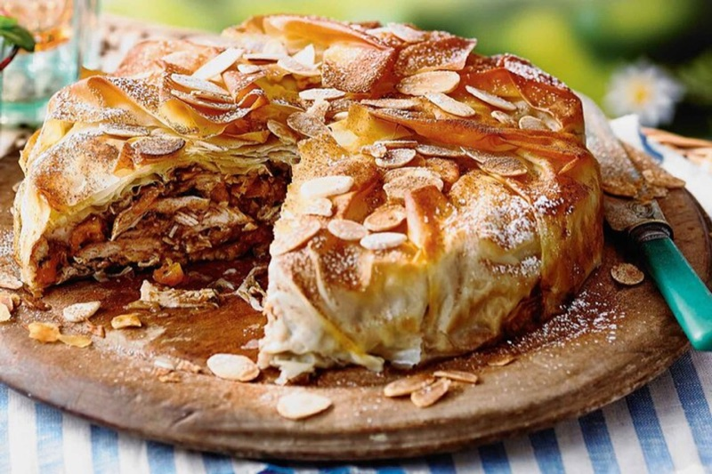
What to order: Chicken or pigeon pastilla — layers of flaky warqa pastry filled with spiced meat, toasted almonds, and dusted with cinnamon and powdered sugar. Sweet-savory perfection. Also try seafood pastilla if available.
"If you want something other than tagine, I recommend also trying pastilla (fish or chicken), rfissa, seffa, tanjia (a Marrakech regional dish)."
— r/finedining · Best restaurants Marrakech, 2025
tabiji verdict: Morocco's greatest culinary invention — savoury meat in sweet, flaky pastry dusted with cinnamon. The combination shouldn't work but it absolutely does. Pigeon is traditional, chicken is more common, seafood is the modern twist. Individual pastillas from medina bakeries are cheap and perfect for eating on the go.
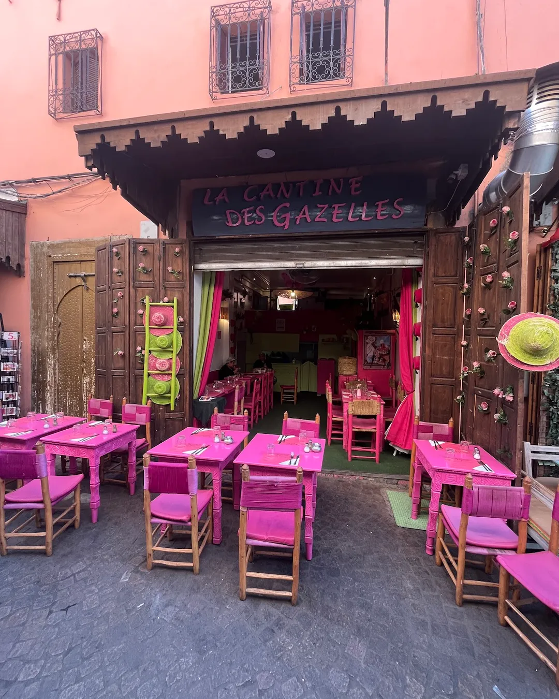
What to order: Traditional tagine, couscous on Fridays (the Moroccan tradition), or their daily specials. Honest, homestyle Moroccan cooking at fair prices.
tabiji verdict: A local-recommended spot for authentic Moroccan home cooking in the medina. No frills, no Instagram decor — just well-made tagines and couscous at prices that won't destroy your budget. The kind of place a Moroccan friend would take you to.
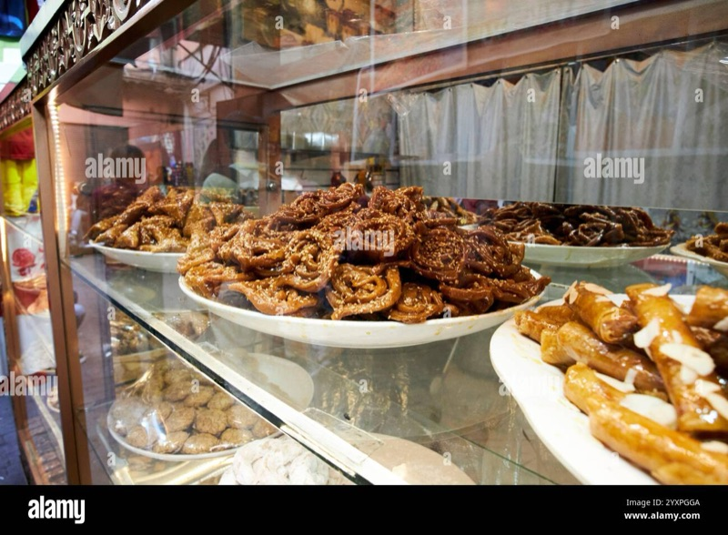
What to order: Chebakia — flower-shaped fried pastry soaked in honey and sprinkled with sesame seeds. And briouats — crispy triangular pastries filled with almond paste or spiced meat. Both are Moroccan street dessert royalty.
"Everything the stalls in Jemaa el-Fna have to offer: snail soup, fried liver sandwiches, roasted lamb, honey-drizzled chebakia."
— r/travel · Best street food in Marrakech
tabiji verdict: Your Moroccan street food crawl should end on a sweet note. Chebakia are achingly sweet, dripping with honey — one is usually enough. Briouats are more versatile: the almond ones are dessert, the meat ones make great snacks. Buy a mixed bag from any medina bakery for 10–20 MAD.
Frequently Asked Questions
Is street food in Marrakech safe to eat?
Generally yes, with basic precautions. Eat at stalls with high turnover where food is cooked fresh in front of you. Look for stalls where locals are eating — that's the best quality and safety signal. Carry hand sanitizer since stalls rarely have handwashing facilities. Avoid anything that's been sitting out for a long time, and stick to bottled water. The cooked food stalls are generally safer than raw salads.
How much does street food cost in Marrakech?
Street food is extremely affordable. Snail soup: 5–15 MAD ($0.50–$1.50). Sfenj: 1–3 MAD each. Orange juice: 5–15 MAD. Msemen: 3–10 MAD. A full plate of mechoui or tangia: 40–80 MAD ($4–$8). Mixed meat sandwich: 15–30 MAD. You can eat three meals from street stalls for under 100 MAD ($10) total.
What is the best time to eat street food in Marrakech?
The Jemaa el-Fnaa food stalls come alive after sunset (around 6–7 PM), with peak atmosphere between 8–11 PM. For breakfast street food like msemen and sfenj, head out between 7–10 AM. Mechoui Alley is best for lunch (11 AM–3 PM) when the lamb is freshest. Snail stalls operate from late afternoon through evening.
What street food should I try first in Marrakech?
Start with freshly squeezed orange juice at Jemaa el-Fnaa — it's refreshing and an easy introduction. Then try snail soup (babbouche) — it sounds intimidating but the herbal broth is incredible. For something substantial, head to Mechoui Alley for slow-roasted lamb. If you're adventurous, try tangia at Chez Lamine — lamb cooked for hours in hammam ashes.
What is tangia and where can I try it?
Tangia (tanjia) is Marrakech's signature dish — lamb or beef slow-cooked for hours in a clay urn buried in the ashes of a hammam (public bathhouse). It's a workingman's dish traditionally prepared by bachelors. The best spot is Chez Lamine Hadj Mustapha in Mechoui Alley. The meat falls apart at the touch of a fork, seasoned with preserved lemons, saffron, and ras el hanout.
Are the Jemaa el-Fnaa food stalls tourist traps?
Some are. Stalls with aggressive touts pulling you in tend to be overpriced. Look for stalls where Moroccans are eating — that's your quality indicator. The snail stalls and juice vendors tend to be more authentic. Mechoui Alley and the smaller stalls deeper in the medina offer better value. Prices have gone up in recent years, but even the "tourist price" is still very affordable by Western standards.